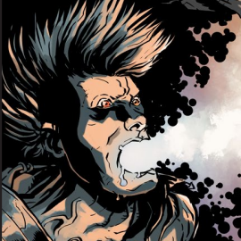

МутацииМутации — биологические козыри твоего персонажа, сверхчеловеческие и сверхъестественные способности, дар его изменённой ДНК.В начале игры каждый мутант получает одну мутацию, и каждый из них может заработать дополнительные мутации по ходу игры. Мутации не выбирают — они случайны, и каждый раз, когда нужно определить новую мутацию, необходимо тянуть карту мутаций из Колоды мутантов или проходить проверку по соответствующей таблице.
Отдача
Брось по одному основному кубику за каждый потраченный при активации пункт мутации. Если выпадет хотя бы один ☣, происходит отдача. Мутация срабатывает, но не так, как обычно, — чтобы определить побочный эффект отдачи, пройди проверку d6 по таблице.
Побочные эффекты
☣
Скрытые биологические механизмы перестраивают организм мутанта. Он получает неизлечимое повреждение, в результате которого одна из его характеристик (по твоему выбору) снижается на один пункт. Взамен персонаж получает новую мутацию.
2
Персонаж становится жертвой собственной мутации и получает те же повреждения и в том же объёме, что и его цель. Если активированная мутация не наносит повреждений, персонаж просто теряет ориентацию в пространстве и пропускает свой следующий ход.
3
При активации тратится вдвое больше пунктов мутации, чем обычно, но эффект мутации при этом не меняется. Запас пунктов мутации не может упасть ниже нуля.
4
Механизмы, отвечающие за работу мутации, блокируются сразу после её активации. Ты не сможешь использовать её до начала следующей игровой встречи.
5
Мутация изменяет внешность персонажа (ты сам определяешь, как именно). Эффект чисто косметический, но необратимый.
☢
Активация мутации в этот раз даётся гораздо легче, чем обычно. Мутант получает назад все только что потраченные пункты мутации и при желании может немедленно (в этот же ход) активировать ту же мутацию ещё раз.
Таблица мутаций
D11-16
D11-16
Бегун
Особенности метаболизма и строения мышц ног позволяют мутанту развивать потрясающую скорость на коротких дистанциях. Благодаря этому он может:
• Удвоить свою скорость на один ход. Каждый манёвр перемещения считается за два. Цена: 1 пункт мутации.
• Резко ускориться и оставить врага далеко позади. Пытаясь бежать с поля боя, мутант может активировать этот эффект, чтобы гарантированно добиться успеха, как при удачной проверке проворства. Цена: 1 пункт мутации.
• Удвоить свою скорость на один ход. Каждый манёвр перемещения считается за два. Цена: 1 пункт мутации.
• Резко ускориться и оставить врага далеко позади. Пытаясь бежать с поля боя, мутант может активировать этот эффект, чтобы гарантированно добиться успеха, как при удачной проверке проворства. Цена: 1 пункт мутации.
Биокинез
Мутант способен запускать, тормозить или копировать биологические процессы, протекающие в организмах других разумных существ, находящихся в рамках нулевой дистанции. Это позволяет ему:
• Украсть пункт любой характеристики у выбранной цели. С его помощью мутант может восстановить свою собственную (ту же самую) характеристику, пониженную из‑за полученных повреждений. Этот эффект не позволяет лечить травмы и неизлечимые повреждения. Цена: каждый потраченный пункт мутации позволяет украсть 1 пункт характеристики.
• Позаимствовать одну из мутаций противника. При этом противник до окончания следующего раунда лишается возможности активировать эту мутацию, а биокинетик, напротив, может активировать её в следующем раунде по обычным правилам, как будто это его собственная мутация. Цена: 1 пункт мутации.
• Лечить других разумных существ. Лечение травм - процесс односторонний и полностью безопасный, но при исцелении повреждений биокинез превращается в палку о двух концах, и мутант сам получает повреждения, которые только что исцелил. Цена: каждый потраченный пункт мутации позволяет вылечить одно повреждение. Чтобы вылечить травму, потребуется 2 пункта мутации; если травма смертельная – 4 пункта.
• Украсть пункт любой характеристики у выбранной цели. С его помощью мутант может восстановить свою собственную (ту же самую) характеристику, пониженную из‑за полученных повреждений. Этот эффект не позволяет лечить травмы и неизлечимые повреждения. Цена: каждый потраченный пункт мутации позволяет украсть 1 пункт характеристики.
• Позаимствовать одну из мутаций противника. При этом противник до окончания следующего раунда лишается возможности активировать эту мутацию, а биокинетик, напротив, может активировать её в следующем раунде по обычным правилам, как будто это его собственная мутация. Цена: 1 пункт мутации.
• Лечить других разумных существ. Лечение травм - процесс односторонний и полностью безопасный, но при исцелении повреждений биокинез превращается в палку о двух концах, и мутант сам получает повреждения, которые только что исцелил. Цена: каждый потраченный пункт мутации позволяет вылечить одно повреждение. Чтобы вылечить травму, потребуется 2 пункта мутации; если травма смертельная – 4 пункта.
Живой
магнит
магнит
Мутант обладает способностью генерировать мощные электромагнитные поля. Это позволяет ему:
• Отталкивать или притягивать металлические предметы (весом не больше самого мутанта) в рамках средней дистанции. Цена: 1 пункт мутации.
• Метнуть небольшой металлический предмет в цель, находящуюся в рамках средней дистанции. Цена: каждый потраченный пункт мутации позволяет нанести 1 пункт урона.
• Защищаться, отклоняя в сторону металлическое оружие (в том числе пули и стрелы, выпущенные из дистанционного оружия). Цена: каждый потраченный пункт мутации позволяет уменьшить полученый урон на 1.
• Отталкивать или притягивать металлические предметы (весом не больше самого мутанта) в рамках средней дистанции. Цена: 1 пункт мутации.
• Метнуть небольшой металлический предмет в цель, находящуюся в рамках средней дистанции. Цена: каждый потраченный пункт мутации позволяет нанести 1 пункт урона.
• Защищаться, отклоняя в сторону металлическое оружие (в том числе пули и стрелы, выпущенные из дистанционного оружия). Цена: каждый потраченный пункт мутации позволяет уменьшить полученый урон на 1.
Звериный
нюх
нюх
Мутант обладает чрезвычайно развитым обонянием, которое позволяет ему:
• Целый день идти по следу не хуже ищейки. Цена: 1 пункт мутации.
• Почуять крадущегося врага. Цена: каждый потраченный пункт мутации нейтрализует один ☢, полученный противником при встречной проверке скрытности.
• Унюхать съестное. Цена: каждый потраченный пункт мутации позволяет найти d6 порций заражённой Гнилью еды.
• Целый день идти по следу не хуже ищейки. Цена: 1 пункт мутации.
• Почуять крадущегося врага. Цена: каждый потраченный пункт мутации нейтрализует один ☢, полученный противником при встречной проверке скрытности.
• Унюхать съестное. Цена: каждый потраченный пункт мутации позволяет найти d6 порций заражённой Гнилью еды.
Кислотная
железа
железа
Изменённые слюнные железы мутанта производят едкую кислоту. Благодаря им он может:
• Плюнуть кислотой в цель, находящуюся в рамках ближней дистанции. Цель получает по 1 пункту урона сразу и по одному пункту урона каждый раунд, пока не пройдёт проверку проворства. Броня цели при этом работает как обычно. Цена: 1 пункт мутации.
• Пережечь тонкую верёвку или металлический прут, полностью растворить небольшой предмет. Цена: 1 пункт мутации.
• Отпереть простой механический замок. Цена: 1 пункт мутации.
• Плюнуть кислотой в цель, находящуюся в рамках ближней дистанции. Цель получает по 1 пункту урона сразу и по одному пункту урона каждый раунд, пока не пройдёт проверку проворства. Броня цели при этом работает как обычно. Цена: 1 пункт мутации.
• Пережечь тонкую верёвку или металлический прут, полностью растворить небольшой предмет. Цена: 1 пункт мутации.
• Отпереть простой механический замок. Цена: 1 пункт мутации.
Крылья
У мутанта на спине растут мощные и прочные крылья, похожие на крылышки бабочки или мухи. С их помощью он может:
• Летать на небольшие расстояния (до 30 метров) — затем он должен приземлиться. Цена: 1 пункт мутации.
• Подлететь к противнику, находящемуся в рамках средней дистанции, и тут же атаковать его (проверка драки). Сам полёт при этом считается манёвром. Цена: 1 пункт мутации.
• Высокочастотное жужжание, создаваемое крыльями, способно сбивать противников с толку. Цена: каждый потраченный пункт мутации позволяет выбрать одну цель в рамках средней дистанции — все они получат по 1 пункту стресса.
• Летать на небольшие расстояния (до 30 метров) — затем он должен приземлиться. Цена: 1 пункт мутации.
• Подлететь к противнику, находящемуся в рамках средней дистанции, и тут же атаковать его (проверка драки). Сам полёт при этом считается манёвром. Цена: 1 пункт мутации.
• Высокочастотное жужжание, создаваемое крыльями, способно сбивать противников с толку. Цена: каждый потраченный пункт мутации позволяет выбрать одну цель в рамках средней дистанции — все они получат по 1 пункту стресса.
D21-26
Кукловод
Особое строение мозга позволяет мутанту контролировать поведение других разумных существ, превращая их в послушных марионеток. Для этого необходимо установить с целью зрительный контакт, который возможен лишь в рамках ближней дистанции. Мутант может:
• Выбрать, какое следующее действие предпримет его марионетка. Совершая указанное действие, цель проходит проверку навыка как обычно. Цена: 1 пункт мутации. Кукловод может потратить дополнительные пункты мутации, чтобы активировать мутацию марионетки, как будто это его собственная мутация.
• Приказать марионетке атаковать саму себя. Урон, который она себе нанесёт, будет равен урону её оружия. Цена: 1 пункт мутации. Каждый дополнительный пункт мутации увеличит урон на 1 пункт.
• Выбрать, какое следующее действие предпримет его марионетка. Совершая указанное действие, цель проходит проверку навыка как обычно. Цена: 1 пункт мутации. Кукловод может потратить дополнительные пункты мутации, чтобы активировать мутацию марионетки, как будто это его собственная мутация.
• Приказать марионетке атаковать саму себя. Урон, который она себе нанесёт, будет равен урону её оружия. Цена: 1 пункт мутации. Каждый дополнительный пункт мутации увеличит урон на 1 пункт.
Люминесц-
енция
енция
Некоторые участки кожного покрова мутанта способны испускать достаточно яркий свет. Это позволяет ему:
• Ослепить яркой вспышкой любую цель в рамках ближней дистанции — ослепление действует по правилам темноты. Цена: каждый потраченный пункт мутации ослепляет жертву на один раунд.
• На несколько минут осветить область в рамках средней дистанции (около 30 метров) вокруг себя. Цена: 1 пункт мутации.
• Сбить врагов с толку серией ярких вспышек. Пытаясь бежать с поля боя, мутант может активировать этот эффект, чтобы гарантированно добиться успеха при проверке проворства. Цена: 1 пункт мутации.
• Ослепить яркой вспышкой любую цель в рамках ближней дистанции — ослепление действует по правилам темноты. Цена: каждый потраченный пункт мутации ослепляет жертву на один раунд.
• На несколько минут осветить область в рамках средней дистанции (около 30 метров) вокруг себя. Цена: 1 пункт мутации.
• Сбить врагов с толку серией ярких вспышек. Пытаясь бежать с поля боя, мутант может активировать этот эффект, чтобы гарантированно добиться успеха при проверке проворства. Цена: 1 пункт мутации.
Мощные
ноги
ноги
Строение мышц и костей ног мутанта позволяет ему совершать головокружительные прыжки. Он может:
• Прыгнуть на расстояние до 10 метров в длину и 5 метров в высоту. Цена: 1 пункт мутации.
• Прыгнуть на противника в рамках средней дистанции и немедленно атаковать его (проверка драки). Сам прыжок при этом считается манёвром. Цена: 1 пункт мутации.
• Избежать опасности, вовремя отскочив в сторону. Пытаясь бежать с поля боя, персонаж может активировать этот эффект, чтобы гарантированно добиться успеха, как при удачной проверке проворства. Цена: 1 пункт мутации.
• Прыгнуть на расстояние до 10 метров в длину и 5 метров в высоту. Цена: 1 пункт мутации.
• Прыгнуть на противника в рамках средней дистанции и немедленно атаковать его (проверка драки). Сам прыжок при этом считается манёвром. Цена: 1 пункт мутации.
• Избежать опасности, вовремя отскочив в сторону. Пытаясь бежать с поля боя, персонаж может активировать этот эффект, чтобы гарантированно добиться успеха, как при удачной проверке проворства. Цена: 1 пункт мутации.
Огненное
дыхание
дыхание
Особые железы во рту вырабатывают легковоспламеняющийся газ — когда мутант выдыхает его, газ превращается в поток смертоносного пламени. Персонаж может:
• Поджечь что‑нибудь горючее. Цена: 1 пункт мутации.
• Плюнуть огнём в цель, находящуюся в рамках ближней дистанции. Цена: каждый потраченный пункт мутации позволяет нанести 1 пункт урона.
• Нанести по 1 пункту урона всем выбранным целям в рамках ближней дистанции. Цена: каждый потраченный пункт мутации позволяет выбрать одну цель.
• Поджечь что‑нибудь горючее. Цена: 1 пункт мутации.
• Плюнуть огнём в цель, находящуюся в рамках ближней дистанции. Цена: каждый потраченный пункт мутации позволяет нанести 1 пункт урона.
• Нанести по 1 пункту урона всем выбранным целям в рамках ближней дистанции. Цена: каждый потраченный пункт мутации позволяет выбрать одну цель.
Падальщик
Пищеварительная система мутанта устроена чрезвычайно просто и надёжно. Он может:
• Есть сырое мясо, не рискуя заразиться Гнилью, даже если добыча издохла много дней назад. Мелкое животное считается эквивалентом одной порции еды, а крупное (вроде человека) — двух. Цена: 1 пункт мутации.
• Крушить кости и рвать плоть своими могучими челюстями и мощными зубами. Цель должна находиться в рамках нулевой дистанции. Цена: каждый потраченный пункт мутации позволяет нанести 1 пункт урона.
• Есть сырое мясо, не рискуя заразиться Гнилью, даже если добыча издохла много дней назад. Мелкое животное считается эквивалентом одной порции еды, а крупное (вроде человека) — двух. Цена: 1 пункт мутации.
• Крушить кости и рвать плоть своими могучими челюстями и мощными зубами. Цель должна находиться в рамках нулевой дистанции. Цена: каждый потраченный пункт мутации позволяет нанести 1 пункт урона.
Пирокинез
Мутант обладает способностью нагревать предметы силой мысли. Это позволяет ему:
• Поджигать неподвижные горючие предметы. Цена: 1 пункт мутации.
• Поджигать противников, находящихся в рамках ближней дистанции. Цена: каждый потраченный пункт мутации позволяет нанести цели 1 пункт урона. Броня цели при этом не действует.
• Растопить лёд или обогреть холодное помещение — это позволит избавиться от переохлаждения и на протяжении часа игнорировать эффект холода. Цена: 1 пункт мутации.
• Поджигать неподвижные горючие предметы. Цена: 1 пункт мутации.
• Поджигать противников, находящихся в рамках ближней дистанции. Цена: каждый потраченный пункт мутации позволяет нанести цели 1 пункт урона. Броня цели при этом не действует.
• Растопить лёд или обогреть холодное помещение — это позволит избавиться от переохлаждения и на протяжении часа игнорировать эффект холода. Цена: 1 пункт мутации.
D31-36
Пожиратель
гнили
гнили
Метаболизм мутанта способен противостоять воздействию Гнили и даже использовать её себе во благо. Персонаж накапливает пункты Гнили как обычно, но при этом может:
• Уменьшать полученные от воздействия Гнили повреждения. Цена: каждый потраченный пункт мутации уменьшает полученный урон на 1 пункт.
• Лечиться при помощи Гнили. Цена: каждый потраченный пункт мутации (и Гнили) восстанавливает 1 пункт любой характеристики, сниженной из‑за полученных повреждений. Перманентные пункты Гнили использовать нельзя.
• Облучить концентрированной Гнилью любого противника в рамках нулевой дистанции. Цена: каждый потраченный пункт мутации (и Гнили) позволяет нанести цели 1 пункт урона. Перманентные пункты Гнили использовать нельзя.
Обратите внимание, что использованные пункты Гнили могут стать перманентными, как при обеззараживании
• Уменьшать полученные от воздействия Гнили повреждения. Цена: каждый потраченный пункт мутации уменьшает полученный урон на 1 пункт.
• Лечиться при помощи Гнили. Цена: каждый потраченный пункт мутации (и Гнили) восстанавливает 1 пункт любой характеристики, сниженной из‑за полученных повреждений. Перманентные пункты Гнили использовать нельзя.
• Облучить концентрированной Гнилью любого противника в рамках нулевой дистанции. Цена: каждый потраченный пункт мутации (и Гнили) позволяет нанести цели 1 пункт урона. Перманентные пункты Гнили использовать нельзя.
Обратите внимание, что использованные пункты Гнили могут стать перманентными, как при обеззараживании
Психокинез
Мутант обладает способностью вызывать галлюцинации у живых существ, находящихся в рамках ближней дистанции. Это позволяет ему:
• Населить разум выбранной цели кошмарными видениями. Цена: за каждый потраченный пункт мутации цель получает один пункт смятения или стресса (по твоему выбору).
• Сбить противника с толку и заставить того пропустить следующее задуманное действие. Этот эффект работает, только если цель — разумное существо. Цена: каждый потраченный пункт мутации позволяет выбрать одну цель.
• Создать настолько реалистичную галлюцинацию, что у цели не будет никаких сомнений в том, что всё происходит на самом деле. Цена: 2 пункта мутации.
• Населить разум выбранной цели кошмарными видениями. Цена: за каждый потраченный пункт мутации цель получает один пункт смятения или стресса (по твоему выбору).
• Сбить противника с толку и заставить того пропустить следующее задуманное действие. Этот эффект работает, только если цель — разумное существо. Цена: каждый потраченный пункт мутации позволяет выбрать одну цель.
• Создать настолько реалистичную галлюцинацию, что у цели не будет никаких сомнений в том, что всё происходит на самом деле. Цена: 2 пункта мутации.
Споронос
Под кожей у мутанта скрыто несколько споровых сумок, способных выстреливать целые облака спор в противников, находящихся в рамках ближней дистанции:
• Едкие споры режут глаза и обжигают кожу. Цена: за каждый потраченный пункт мутации выбранная цель получает один пункт усталости.
• Зловонное облако вызывает у противника удушье и сильную тошноту. Цена: каждый потраченный пункт мутации позволяет нанести выбранной цели 1 пункт урона. Броня цели при этом не действует.
• Густой споровый туман способен скрыть мутанта от взглядов врагов. Пытаясь бежать с поля боя, он может активировать этот эффект, чтобы гарантированно добиться успеха, как при удачной проверке проворства. Цена: 1 пункт мутации.
• Едкие споры режут глаза и обжигают кожу. Цена: за каждый потраченный пункт мутации выбранная цель получает один пункт усталости.
• Зловонное облако вызывает у противника удушье и сильную тошноту. Цена: каждый потраченный пункт мутации позволяет нанести выбранной цели 1 пункт урона. Броня цели при этом не действует.
• Густой споровый туман способен скрыть мутанта от взглядов врагов. Пытаясь бежать с поля боя, он может активировать этот эффект, чтобы гарантированно добиться успеха, как при удачной проверке проворства. Цена: 1 пункт мутации.
Телепатия
Мутант способен читать и изменять мысли разумных существ, находящихся в рамках ближней дистанции:
• Лжёт ли твой собеседник? Скрывает ли он что‑нибудь? О чём он думает прямо сейчас? Цена: каждый потраченный пункт мутации позволяет узнать ответ на один из этих вопросов.
• Мутант может внушить своему собеседнику какую‑нибудь несложную мысль, которую тот сочтёт истинной. Цена: 1 пункт мутации.
• Мутант способен создать в мозгу противника «короткое замыкание», которое собьёт того с толку. Цена: за каждый потраченный пункт мутации выбранная цель получает 1 пункт смятения.
• Лжёт ли твой собеседник? Скрывает ли он что‑нибудь? О чём он думает прямо сейчас? Цена: каждый потраченный пункт мутации позволяет узнать ответ на один из этих вопросов.
• Мутант может внушить своему собеседнику какую‑нибудь несложную мысль, которую тот сочтёт истинной. Цена: 1 пункт мутации.
• Мутант способен создать в мозгу противника «короткое замыкание», которое собьёт того с толку. Цена: за каждый потраченный пункт мутации выбранная цель получает 1 пункт смятения.
Ускоренная
реакция
реакция
Сверхчеловеческая скорость реакции позволяет мутанту:
• Повысить инициативу в начале сражения (до проверки инициативы) или в самый разгар битвы (в этом случае активация мутации считается манёвром). Цена: каждый потраченный пункт мутации позволяет повысить значение инициативы на 2 пункта.
• Провести дополнительную атаку (проверку драки или стрельбы). Цена: 1 пункт мутации.
• Уклониться от вражеской атаки (проверки драки или стрельбы). Этот эффект необходимо активировать до проверки брони. Цена: каждый потраченный пункт мутации позволяет уменьшить полученный урон на 1 пункт.
• Повысить инициативу в начале сражения (до проверки инициативы) или в самый разгар битвы (в этом случае активация мутации считается манёвром). Цена: каждый потраченный пункт мутации позволяет повысить значение инициативы на 2 пункта.
• Провести дополнительную атаку (проверку драки или стрельбы). Цена: 1 пункт мутации.
• Уклониться от вражеской атаки (проверки драки или стрельбы). Этот эффект необходимо активировать до проверки брони. Цена: каждый потраченный пункт мутации позволяет уменьшить полученный урон на 1 пункт.
Человек-
амфибия
амфибия
Тело мутанта обладает рядом биологических приспособлений, характерных для рыб и амфибий. Благодаря им он чувствует себя как дома не только на суше, но и в воде:
• Мутант может дышать под водой на протяжении нескольких минут и плавать быстро и ловко, как рыба. Цена: 1 пункт мутации.
• Скользкая чешуя, которой покрыто тело мутанта, эффективно нейтрализует урон. Цена: каждый потраченный пункт мутации уменьшает полученный урон на 1.
• Острые как иглы зубы мутанта могут стать смертельным оружием. Цель должна находиться в рамках нулевой дистанции. Цена: каждый потраченный пункт мутации позволяет нанести 1 пункт урона.
• Мутант может дышать под водой на протяжении нескольких минут и плавать быстро и ловко, как рыба. Цена: 1 пункт мутации.
• Скользкая чешуя, которой покрыто тело мутанта, эффективно нейтрализует урон. Цена: каждый потраченный пункт мутации уменьшает полученный урон на 1.
• Острые как иглы зубы мутанта могут стать смертельным оружием. Цель должна находиться в рамках нулевой дистанции. Цена: каждый потраченный пункт мутации позволяет нанести 1 пункт урона.
D41-46
Человек-
зверь
зверь
Тело мутанта обладает рядом биологических приспособлений, характерных для хищных зверей:
• Острые когти и мощные клыки позволяют атаковать одного или нескольких противников в рамках нулевой дистанции. Цена: каждый потраченный пункт мутации позволяет нанести 1 пункт урона любой из имеющихся целей.
• Грозный рык вселяет ужас в сердца врагов. Выбранные цели в рамках ближней дистанции по‑лучают по 1 пункту стресса. Цена: каждый потраченный пункт мутации позволяет выбрать одну цель.
• Мутант цепляется за жизнь с поистине звериным упорством. Он способен восстанавливать пониженные из‑за полученных повреждений телосложение и ловкость, даже если показатели этих характеристик опускаются до нуля. Персонаж при этом немедленно восстанавливает бое‑ способность, но полученная травма всё равно остаётся. Цена: каждый потраченный пункт мутации восстанавливает 1 пункт характеристики.
• Острые когти и мощные клыки позволяют атаковать одного или нескольких противников в рамках нулевой дистанции. Цена: каждый потраченный пункт мутации позволяет нанести 1 пункт урона любой из имеющихся целей.
• Грозный рык вселяет ужас в сердца врагов. Выбранные цели в рамках ближней дистанции по‑лучают по 1 пункту стресса. Цена: каждый потраченный пункт мутации позволяет выбрать одну цель.
• Мутант цепляется за жизнь с поистине звериным упорством. Он способен восстанавливать пониженные из‑за полученных повреждений телосложение и ловкость, даже если показатели этих характеристик опускаются до нуля. Персонаж при этом немедленно восстанавливает бое‑ способность, но полученная травма всё равно остаётся. Цена: каждый потраченный пункт мутации восстанавливает 1 пункт характеристики.
Человек-
насекомое
насекомое
Тело мутанта обладает рядом биологических приспособлений, характерных для насекомых:
• Твёрдая ороговевшая кожа мутанта на ощупь напоминает хитин. Цена: каждый потраченный пункт мутации уменьшает полученный урон на 1 пункт.
• Мутант может в течение нескольких минут лазать по стенам, как муха. Цена: 1 пункт мутации.
• Раны мутанта затягиваются прямо на глазах. Он восстанавливает пониженное из‑за урона телосложение, даже если его показатель опускается до нуля (при этом ты восстанавливаешь боеспособность, но полученная травма остаётся). Цена: каждый потраченный пункт мутации восстанавливает 1 пункт телосложения.
• Твёрдая ороговевшая кожа мутанта на ощупь напоминает хитин. Цена: каждый потраченный пункт мутации уменьшает полученный урон на 1 пункт.
• Мутант может в течение нескольких минут лазать по стенам, как муха. Цена: 1 пункт мутации.
• Раны мутанта затягиваются прямо на глазах. Он восстанавливает пониженное из‑за урона телосложение, даже если его показатель опускается до нуля (при этом ты восстанавливаешь боеспособность, но полученная травма остаётся). Цена: каждый потраченный пункт мутации восстанавливает 1 пункт телосложения.
Человек-
растение
растение
Тело мутанта обладает рядом биологических приспособлений, характерных для мира растений:
• Мутант способен питаться солнечным светом (работает только под открытым небом). Цена: каждый потраченный пункт мутации — эквивалент одной порции еды.
• Вместо волос кожа мутанта покрыта острыми шипами, которыми он может атаковать противника. Цель должна находиться в рамках нулевой дистанции. Цена: каждый потраченный пункт мутации позволяет нанести 1 пункт урона.
• По прочности кожа мутанта ничем не уступает древесной коре. Цена: каждый потраченный пункт мутации уменьшает полученный урон на 1 пункт.
• Мутант способен питаться солнечным светом (работает только под открытым небом). Цена: каждый потраченный пункт мутации — эквивалент одной порции еды.
• Вместо волос кожа мутанта покрыта острыми шипами, которыми он может атаковать противника. Цель должна находиться в рамках нулевой дистанции. Цена: каждый потраченный пункт мутации позволяет нанести 1 пункт урона.
• По прочности кожа мутанта ничем не уступает древесной коре. Цена: каждый потраченный пункт мутации уменьшает полученный урон на 1 пункт.
Человек-
рептилия
рептилия
Тело мутанта обладает рядом биологических приспособлений, характерных для рептилий:
• Мутант может изменять цвет и текстуру кожи, как хамелеон. Это позволяет ему гарантированно выигрывать проверки скрытности, а если противник атакует, пока мутация активна, считается, что эта атака происходит в полной темноте. Как бы то ни было, для того чтобы этот эффект сработал, мутант должен быть полностью (или почти полностью) обнажён. Эффект действует на протяжении нескольких минут. Цена: 1 пункт мутации.
• Строение костей и суставов позволяет мутанту протискиваться сквозь отверстия и щели шириной всего в несколько сантиметров. Цена: 1 пункт мутации.
• Пристальный взгляд змеиных глаз способен заворожить любое разумное существо в рамках ближней дистанции. Цена: за каждый потраченный пункт мутации цель получает один пункт смятения.
• Мутант может изменять цвет и текстуру кожи, как хамелеон. Это позволяет ему гарантированно выигрывать проверки скрытности, а если противник атакует, пока мутация активна, считается, что эта атака происходит в полной темноте. Как бы то ни было, для того чтобы этот эффект сработал, мутант должен быть полностью (или почти полностью) обнажён. Эффект действует на протяжении нескольких минут. Цена: 1 пункт мутации.
• Строение костей и суставов позволяет мутанту протискиваться сквозь отверстия и щели шириной всего в несколько сантиметров. Цена: 1 пункт мутации.
• Пристальный взгляд змеиных глаз способен заворожить любое разумное существо в рамках ближней дистанции. Цена: за каждый потраченный пункт мутации цель получает один пункт смятения.
Четыре
руки
руки
Благодаря дополнительной паре верхних конечностей мутант может:
• Атаковать в драке дважды за один ход. Вторая атака считается манёвром. Цена: 1 пункт мутации.
• Защититься от вражеских атак (проверок драки) несколько раз за ход. Цена: 1 пункт мутации за каждую дополнительную защиту.
• С лёгкостью лазать по стенам. Пытаясь куда‑нибудь вскарабкаться, персонаж может активировать этот эффект, чтобы гарантированно добиться успеха, как при удачной проверке проворства. Цена: 1 пункт мутации.
• Атаковать в драке дважды за один ход. Вторая атака считается манёвром. Цена: 1 пункт мутации.
• Защититься от вражеских атак (проверок драки) несколько раз за ход. Цена: 1 пункт мутации за каждую дополнительную защиту.
• С лёгкостью лазать по стенам. Пытаясь куда‑нибудь вскарабкаться, персонаж может активировать этот эффект, чтобы гарантированно добиться успеха, как при удачной проверке проворства. Цена: 1 пункт мутации.
Эмокинез
Мутант обладает способностью влиять на эмоциональное состояние других существ. Это позволяет ему:
• Возбуждать в окружающих чувство страха и тревоги. Цена: за каждый потраченный пункт мутации цель получает один пункт стресса.
• Снимать стресс. Мутант должен прикоснуться к цели, чтобы этот эффект сработал (целью этого эффекта может быть и сам мутант). Цена: каждый потраченный пункт мутации восстанавливает 1 пункт эмпатии.
• Воздействовать на настроение группы разумных существ. Мутант не может контролировать действия членов группы непосредственно, только внушить одну общую эмоцию — гнев, радость, грусть, любовь или страх. Это воздействие длится несколько минут. Цена: 1 пункт мутации.
• Возбуждать в окружающих чувство страха и тревоги. Цена: за каждый потраченный пункт мутации цель получает один пункт стресса.
• Снимать стресс. Мутант должен прикоснуться к цели, чтобы этот эффект сработал (целью этого эффекта может быть и сам мутант). Цена: каждый потраченный пункт мутации восстанавливает 1 пункт эмпатии.
• Воздействовать на настроение группы разумных существ. Мутант не может контролировать действия членов группы непосредственно, только внушить одну общую эмоцию — гнев, радость, грусть, любовь или страх. Это воздействие длится несколько минут. Цена: 1 пункт мутации.
D51-66
Эхолокатор
Испуская высокочастотные звуковые сигналы и слушая отражённое эхо, мутант может:
• Узнать, что творится вокруг. Это позволяет ему на протяжении нескольких минут игнорировать правила темноты. Цена: 1 пункт мутации.
• Оглушить противников, находящихся в рамках средней дистанции. Цена: каждый потраченный пункт мутации позволяет выбрать одну цель — все они получат по 1 пункту усталости.
• Сбить прицел вражескому стрелку, находящемуся в рамках средней дистанции. Цена: каждый потраченный пункт мутации нейтрализует один ☢, полученный стрелком в результате проверки стрельбы.
• Узнать, что творится вокруг. Это позволяет ему на протяжении нескольких минут игнорировать правила темноты. Цена: 1 пункт мутации.
• Оглушить противников, находящихся в рамках средней дистанции. Цена: каждый потраченный пункт мутации позволяет выбрать одну цель — все они получат по 1 пункту усталости.
• Сбить прицел вражескому стрелку, находящемуся в рамках средней дистанции. Цена: каждый потраченный пункт мутации нейтрализует один ☢, полученный стрелком в результате проверки стрельбы.
52-66
Пройди проверку ещё раз